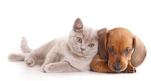
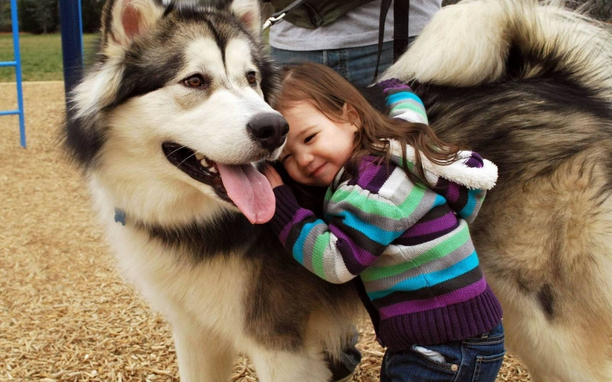

Caninos que llegan al alma


Ayudalos a ayudarlos
Antes de adoptar, debes estar perfectamente consciente de los cuidados que requiere el animal que elijas. Un perro necesita un lugar limpio para dormir, comida adecuada, un lugar para hacer sus necesidades que deberás limpiar a diario, ejercicio, paseos diarios, vacunas, atención médica, baños. Un gato necesita un lugar limpio para dormir, un arenero que tendrás que limpiar a diario, un lugar para afilarse las uñas, comida adecuada, vacunas, atención médica. Además de todo esto, los animales necesitan un periodo para adaptarse a su nueva familia y a su nueva casa. Ello quiere decir que le tendrás que enseñar dónde debe ir al baño, dónde puede subirse y dónde no, con qué puede jugar y con qué no. Si son cachorros, debes saber que muy probablemente en algún momento destruirán algo o irán al baño donde no deben. También debes estar muy consciente de que el cachorrito crecerá y que eso no es ningún pretexto para abandonarlo ni dejar de prestarle atención y darle cariño. Los perros y gatos a